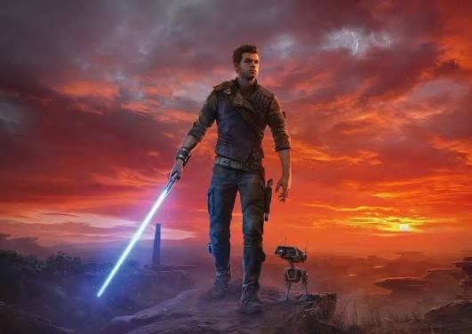

📖 Sobre o Jogo

Star Wars Jedi: Survivor é um jogo de ação e aventura épico em terceira pessoa. A história passa-se 5 anos após os eventos de Jedi: Fallen Order, acompanhando Cal Kestis em sua luta contra o Império Galáctico! 🛡️
✨ Principais Destaques
- 🗡️ Novas Posturas de Sabre de Luz: Domine diferentes estilos de combate, incluindo o sabre duplo e a postura com guarda transversal.
- 🪐 Exploração Galáctica: Viaje por novos planetas vastos cheios de mistérios, tesouros e inimigos perigosos.
- 🔮 Poderes da Força Expandidos: Use novas habilidades da Força para resolver quebra-cabeças e derrotar bosses.
- 🤖 BD-1 ao seu lado: Conta sempre com o teu fiel companheiro dador de suprimentos e ajudante de exploração!
🎮 Plataformas Disponíveis
Disponível para jogar em: 💻 PC | 🟦 PlayStation 5 | 🟩 Xbox Series X/S